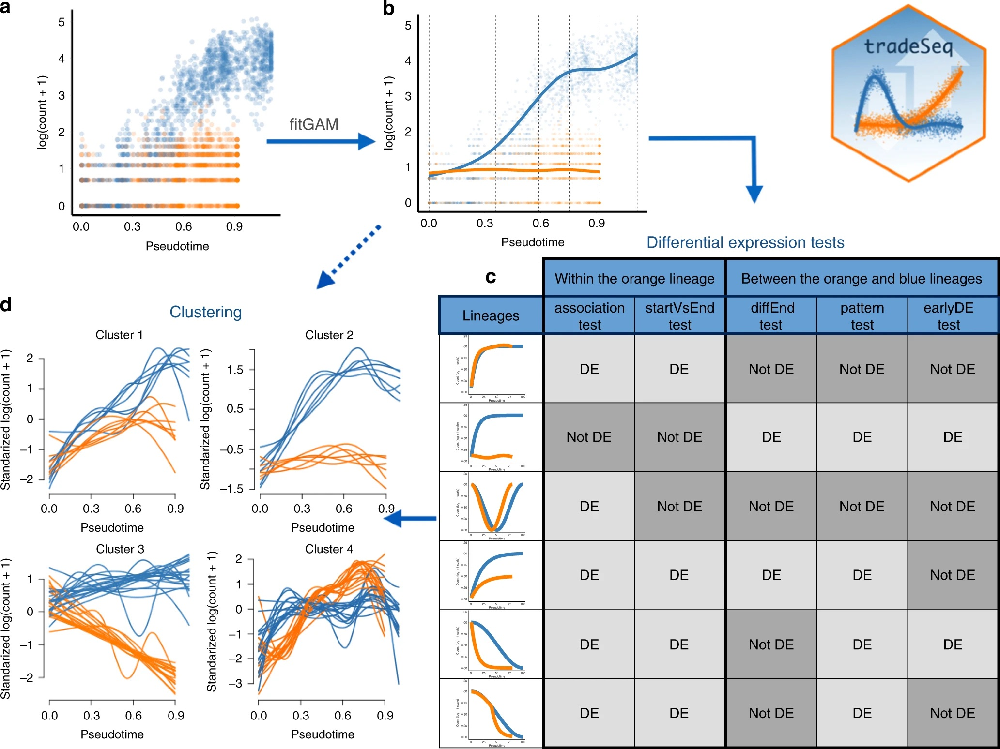
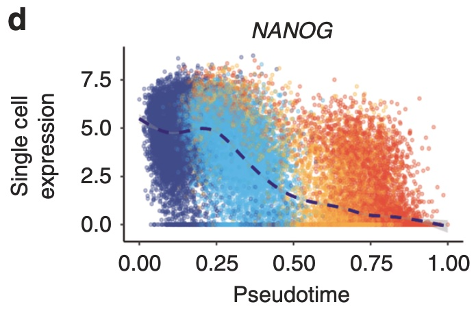
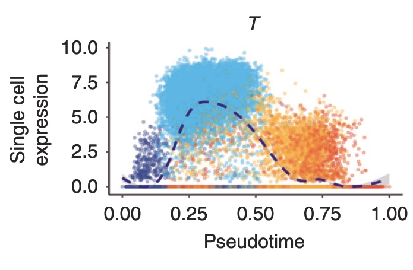
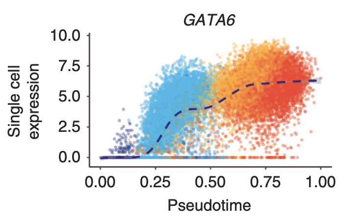

Preamble: installation of R libraries
# install BiocManager package if not installed yet.
# BiocManager is the package installer for Bioconductor software.
if (!requireNamespace("BiocManager", quietly = TRUE))
install.packages("BiocManager")
# install packages if not yet installed.
pkgs <- c("SingleCellExperiment",
"ExperimentHub",
"edgeR",
"biomaRt",
"DropletUtils",
"scRNAseq",
"scater",
"scuttle",
"scran",
"scry",
"BiocSingular",
"scDblFinder",
"Seurat",
"PCAtools",
"glmpca",
"genefilter",
"pheatmap",
"tidyverse",
"mclust",
"ggplot2",
"devtools",
"SingleR")
notInstalled <- pkgs[!pkgs %in% installed.packages()[,1]]
if(length(notInstalled) > 0){
BiocManager::install(notInstalled)
}
install harmony from github
library(devtools)
install_github("immunogenomics/harmony",
dependencies = TRUE,
force = TRUE)
The Cuomo dataset
We here make use of the publication of Anna Cuomo et al., which we will refer to as the iPSC dataset. The paper that describes this dataset can be found using this link.
In the experiment, the authors harvested pluripotent stem cells (iPSCs) from 125 healthy human donors, and induced them to study the endoderm differentiation process, in which iPSCs differentiate to endoderm cells over the course of approximately three days. As such, the authors cultered the iPSCs cell lines and allowed them to differentiate for three days. During the experiment, cells were harvested at four different time points: day0 (directly at incubation), day1, day2 and day3. Knowing the process of endoderm differentiation, these time points should roughly correspond to different cell types: day0 are (undifferentiated) iPSCs, day1 are mostly mesendoderm cells, day2 are mostly “intermediate” cells and day3 are mostly fully differentiated endoderm cells.
This dataset was generated using the SMART-Seq2 scRNA-seq protocol.
The final goal of the experiment was to characterize population variation in the process of endoderm differentiation.
Download data
For this lab session, we will work with a subset of the data, i.e., the data for the first (alphabetically) 15 patients in the experiment. These are the data you already downloaded for lab session 2 using the Belnet filesender link.
The original data (125 patient) could be downloaded from Zenodo. At the bottom of this web-page, we can download the files raw_counts.csv.zip and cell_metadata_cols.tsv and store these files locally. We do not recommend doing this during the lab session, to avoid overloading the WiFi network.
Import data
First we read in the count matrix:
library(SingleCellExperiment)
sce <- readRDS("/Users/jg/Desktop/sce_15_cuomo.rds") # change to YOUR path
Obtaining and including rowData
The rowData slot of a SingleCellExperiment object allows for storing information on the features, i.e. the genes, in a dataset. In our object, the rowData slot currently contains the following:
To improve our gene-level information, we may:
Split V1 into two columns, one with the ENSEMBL ID and the other with the gene symbol.
Display which chromosome the gene is located
Many more options are possible, but are not necessary for us right now.
rowData(sce) <- data.frame(Ensembl = gsub("_.*", "", rowData(sce)$V1),
Symbol = gsub("^[^_]*_", "", rowData(sce)$V1))
head(rowData(sce))
library("biomaRt")
ensembl75 <- useEnsembl(biomart = 'genes',
dataset = 'hsapiens_gene_ensembl',
version = 75)
GeneInfo <- getBM(attributes = c("ensembl_gene_id", # To match with rownames SCE
"chromosome_name"), # Info on chromose
mart = ensembl75)
GeneInfo <- GeneInfo[match(rowData(sce)$Ensembl, GeneInfo$ensembl_gene_id),]
rowData(sce) <- cbind(rowData(sce), GeneInfo)
head(rowData(sce))
all(rowData(sce)$Ensembl == rowData(sce)$ensembl_gene_id)
# identical, as desired, so we could optionally remove one of the two
Quality control
Calculate QC variables
library(scater)
# check ERCC spike-in transcripts
sum(grepl("^ERCC-", rowData(sce)$Symbol)) # no spike-in transcripts available
is.mito <- grepl("^MT", rowData(sce)$chromosome_name)
sum(is.mito) # 13 mitochondrial genes
df <- perCellQCMetrics(sce, subsets=list(Mito=is.mito))
head(df)
## add the QC variables to sce object
colData(sce) <- cbind(colData(sce), df)
Exploratory data analysis
In the figure below, we see that several cells have a very low number of expressed genes, and where most of the molecules are derived from mitochondrial genes. This indicates likely damaged cells, presumably because of loss of cytoplasmic RNA from perforated cells, so we should remove these for the downstream analysis.
# Number of genes vs library size
plotColData(sce, x = "sum", y="detected", colour_by="day")
# Mitochondrial genes
plotColData(sce, x = "detected", y="subsets_Mito_percent", colour_by="day")
QC using adaptive thresholds
Below, we remove cells that are outlying with respect to
- A low sequencing depth (number of UMIs);
- A low number of genes detected;
- A high percentage of reads from mitochondrial genes.
We remove a total of \(301\) cells, mainly due to low sequencing depth and low number of genes detected.
lowLib <- isOutlier(df$sum, type="lower", log=TRUE)
lowFeatures <- isOutlier(df$detected, type="lower", log=TRUE)
highMito <- isOutlier(df$subsets_Mito_percent, type="higher")
table(lowLib)
table(lowFeatures)
table(highMito)
discardCells <- (lowLib | lowFeatures | highMito)
table(discardCells)
colData(sce)$discardCells <- discardCells
# visualize cells to be removed
plotColData(sce, x = "detected", y="subsets_Mito_percent", colour_by = "discardCells")
plotColData(sce, x = "sum", y="detected", colour_by="discardCells")
# visualize cells to be removed
plotColData(sce, x = "detected", y="subsets_Mito_percent", colour_by = "donor")
plotColData(sce, x = "sum", y="detected", colour_by="donor")
# visualize cells to be removed
plotColData(sce, x = "detected", y="subsets_Mito_percent", colour_by = "experiment")
plotColData(sce, x = "sum", y="detected", colour_by="experiment")
table(sce$donor, sce$discardCells)
table(sce$donor, sce$discardCells)/rowSums(table(sce$donor, sce$discardCells))
#fractions of removed cells per donor
Most removed cells (fraction) are from patients dixh and babz.
table(sce$experiment, sce$discardCells)
table(sce$experiment, sce$donor)
Most low library sizes seem to come from patient dixh; for patient babz the effect is less pronounced.
plotColData(sce[,sce$donor=="dixh"], x = "sum", y="detected")
plotColData(sce[,sce$donor=="babz"], x = "sum", y="detected")
As such, we are mainly removing cells from specific patients and the respective batches in which they were sequenced. However, we want to be careful; we only want to remove technical artefacts, while retaining as much of the biology as possible. In our exploratory figure, we see that the cells we are removing based on the number of genes detected, are quite far apart from the bulk of the data cloud; as such, these cells may be considered suspicious. For the criterion of library size, we see that the cells removed there are still strongly connected to the data cloud. As such, we may want to relax the filtering criterion there a little bit. When we think of how the adaptive threshold strategy works, we may want to remove cells that are 4MADs away from the center, rather than the default 3 MADs.
# previously
lowLib <- isOutlier(df$sum, type="lower", log=TRUE)
table(lowLib)
# after seeing appropriate exploratory figure
lowLib <- isOutlier(df$sum, nmads=4, type="lower", log=TRUE)
table(lowLib)
discardCells <- (lowLib | lowFeatures | highMito)
table(discardCells)
colData(sce)$discardCells <- discardCells
Note that these steps are not exact; different analysts will arrive to different filtering criteria for many of the steps. The key ideas are that we let appropriate exploratory figures guide us to make reasonable choices; i.e., we look at the data rather than blindly following a standardized pipeline that may work well in many cases, but maybe not our particular dataset.
# remove cells identified using adaptive thresholds
sce <- sce[, !colData(sce)$discardCells]
Normalization
For normalization, the size factors \(s_i\) computed here are simply scaled library sizes:
\[ N_i = \sum_g Y_{gi} \] \[ s_i = N_i / \bar{N}_i \]
sce <- logNormCounts(sce)
# note we also returned log counts: see the additional logcounts assay.
sce
# you can extract size factors using
sf <- librarySizeFactors(sce)
mean(sf) # equal to 1 due to scaling.
plot(x= log(colSums(assays(sce)$counts)),
y=sf)
— end lab session 1 —
Feature selection
Highly variable genes
library(scran)
rownames(sce) <- rowData(sce)$Ensembl
dec <- modelGeneVar(sce)
head(dec)
fit <- metadata(dec)
plot(fit$mean, fit$var,
xlab="Mean of log-expression",
ylab="Variance of log-expression")
curve(fit$trend(x), col="dodgerblue", add=TRUE, lwd=2)
# get top 1000 highly variable genes
hvg <- getTopHVGs(dec,
n=1000)
head(hvg)
# plot these
plot(fit$mean, fit$var,
col = c("orange", "darkseagreen3")[(names(fit$mean) %in% hvg)+1],
xlab="Mean of log-expression",
ylab="Variance of log-expression")
curve(fit$trend(x), col="dodgerblue", add=TRUE, lwd=2)
legend("topleft",
legend = c("Selected", "Not selected"),
col = c("darkseagreen3", "orange"),
pch = 16,
bty='n')
Dimensionality reduction
Linear dimensionality reduction: PCA with feature selection
set.seed(1234)
sce <- runPCA(sce,
ncomponents=30,
subset_row=hvg)
plotPCA(sce,
colour_by = "day")
PCA has been performed. The PCA information has been automatically stored in the reducedDim slot of the SingleCellExperiment object.
head(reducedDim(sce,
type="PCA"))
The plotPCA function of the scater package now allows us to visualize the cells in PCA space, based on the PCA information stored in our object:
plotPCA(sce,
colour_by = "day")
We see that for this dataset, PCA is able to distinguish between the different developmental stages quite well.
A generalization of PCA for exponential family distributions.
library(glmpca)
set.seed(211103)
poipca <- glmpca(Y = assays(sce)$counts[hvg,],
L = 2,
fam = "poi",
minibatch = "stochastic")
reducedDim(sce, "PoiPCA") <- poipca$factors
plotReducedDim(sce,
dimred="PoiPCA",
colour_by = "day")
Using glmpca, we observe a similar reduced dimension plot as for the classical PCA approach, with reasonable separation between cells of different developmental stages.
Non-linear dimensionality reduction: T-SNE
set.seed(8778)
sce <- runTSNE(sce,
dimred = 'PCA',
external_neighbors=TRUE)
plotTSNE(sce,
colour_by = "day")
In this 2D t-SNE space, it is clear that cells of different developmental stages cluster separately. However, there appears to be some heterogeneity. We observe multiple clusters of cells sampled at the same time point. In addition, while still clustering separately, some clusters of cells of different time points are still very close together in 2D space.
We will explore this phenomenon in more detail later.
Non-linear dimensionality reduction: UMAP
set.seed(65187)
sce <- runUMAP(sce,
dimred = "PCA",
min_dist = 0.4,
n_dimred = 12,
external_neighbors = TRUE)
plotUMAP(sce,
colour_by = "day")
We observe a very similar pattern as for the t-SNE above in this UMAP; cells of different developmental stages cluster separately, however, there seems to be an additional level of heterogeneity in the data.
— end lab session 2 —
Batch correction
Observed patient/experiment effect
In this experiment, our main interest is to study the endoderm differentiation process, i.e. the 4-day differentiation process of induced pluripotent stem cells (iPSCs) at day0, via mesendoderm cells (day1) and another intermediate stage (day2) to endoderm cells (day3).
However, we will need to account for the fact that the cells have been sampled from 15 different subject, thus introducing additional biological heterogeneity. There are two variables in the colData of our SingleCellExperiment object that are useful for exploring this:
table(sce$donor,sce$experiment)
We have cells from 15 different patients and 14 different “experiments” (= sequencing batches).
We now will assess if this additional source of heterogeneity is also picked up in the reduced dimension plot.
# time effect in PCA space, all time points
plotPCA(object = ..., # SCE object
colour_by = ...) # day variable
# donor (nuisance) effect in PCA space, all time points
...
# experiment (nuisance) effect in PCA space, all time points
...
We see that within a certain time point, cells of the same patient/experiment seem to cluster together at least to some extent. This effect becomes clearer when we visualize the data of the different time points separately.
# donor effect in PCA space, per time point
plotPCA(sce[,sce$day=="day0"],
colour_by = ...) # day 0
... # day 1
... # day 2
... # day 3
Analogously, we may inspect the effect of patient and experiment in the UMAP visualization we created earlier.
# time effect
plotUMAP(...,
...)
# nuisance effects in UMAP space, all time points
...
...
As expected, we see that the additional heterogeneity observed in the clusters colored based on the time points can be explained by the patient effects.
In this experiment, the primary interest are the changes in gene expression across the four days, reflecting differentiation from induced pluripotent stem cells to endoderm cells. In contrast, the between-patient effects are not of interest here. Using batch correction, we will aim to “correct” for the donor effects, while hopefully retaining the main biological variation of interest!
We will explore two popular strategies for batch correction for scRNA-Seq data: Seurat CCA and Harmony.
Seurat CCA batch correction
We will first integrate the data across the different donors using Seurat. This procedure is implemented to integrate datasets/batches in a pairwise fashion. In the case of multiple batches/datasets, it integrates them in a bottom-up strategy, starting with integrating pairwise samples first. Because of this, below, we will introduce the methodology for two batches/datasets, but note that an analogous procedure is applied in the case of multiple batches/datasets.
The Seurat method will first perform feature selection to identify features that are informative in all datasets. Using these features, it will perform a canonical correlation analysis; a dimensionality reduction technique that focusses on shared variation between datasets/batches. The CCA dimensions may be viewed as gene modules that are present in each dataset. Within this shared space, it identifies anchor cells (one for each donor, in our case). These anchor cells may be considered as cells sharing the same biological state, and systematic differences between them correspond to batch/dataset-specific effects. A correction on the original gene expression matrix is then applied by considering systematic differences across all anchor cells identified for each pair of batches/datasets.
library(Seurat)
seurat_obj <- as.Seurat(...) # SCE object
seurat_obj
In the code chunk below, I remove cells for patients that have less or equal than 30 cells. If we do not do this, we will get issues downstream with the Seurat functions FindIntegrationAnchors and IntegrateData, which break down when the number of cells per batch is small. This is a known issue
and the package maintainers suggest to either remove or manually merge small batches together. We will here simply remove the cells of patient “bezi”.
table(seurat_obj$donor)
table(seurat_obj$donor)[table(seurat_obj$donor) <= 30]
seurat_obj <- seurat_obj[,-which(seurat_obj$donor == names(table(seurat_obj$donor)[table(seurat_obj$donor) <= 30]))]
After this, the SplitObject object function is used to generate a list of Seurat objects, where each list elements hold the data of 1 batch (patient):
seurat_obj.list <- SplitObject(object = ..., # the Seurat object
split.by = "donor")
nlevels(as.factor(sce$donor)) # originally 15 patients
length(seurat_obj.list) # 14 patients left
Next, Seurat will perform the following steps for batch correction:
NormalizeData: by default, takes the count assay of the Seurat object and performs a log-transformation, resulting in an additional log-transformed assay. This is performed for each batch separately.
FindVariableFeatures: Feature selection, using the variance-stabilizing transformation (VST) from Seurat, which amounts to calculating Pearson residuals from a regularized negative binomial regression model, with sequencing depth as a covariate. This is performed for each batch separately.
SelectIntegrationFeatures: Choose the features to use when integrating multiple datasets or batches. This function ranks features by the number of batches they are deemed variable in, breaking ties by the median variable feature rank across datasets. It returns the top scoring features by this ranking, which are then used in the steps below.
FindIntegrationAnchors: For each pair of datasets we want to integrate, we identify anchor cells, one from each dataset, that are assumed to share a similar biological state. Anchor cells are identified as mutual nearest neighbors in the shared canonical correlation analysis space. Anchor cells are also scored and weighted according to their quality.
IntegrateData: Anchor cells are used to calculate a ‘corrected’ data matrix, removing systematic differences between anchor cells. This creates an integrated assay in the Seurat object containing this corrected data matrix, which may then be used for downstream visualization and analysis as such.
# Normalize and identify variable features for each dataset (patient) independently
seurat_obj.list <- lapply(X = seurat_obj.list, FUN = function(x) { # loops over each element in list (donor)
x <- NormalizeData(x, verbose = FALSE)
x <- FindVariableFeatures(x,
selection.method = "vst",
nfeatures = 1000,
verbose = FALSE)
})
# Select features that are repeatedly variable across datasets for integration
features <- SelectIntegrationFeatures(object.list = ...) # list of seurat objects
# Indentify pairs of cells with similar biological state
anchors <- FindIntegrationAnchors(object.list = ..., # list of seurat objects
anchor.features = ..., # the selected features for integration
verbose = FALSE)
# This command creates an 'integrated' data assay. We have set the `k.weight`
# argument, which specifies the Number of neighbors to consider when weighting
# anchors, to 30 (default is 100). This was necessary to avoid errors, since we
# have many batches with less than 100 cells.
data.combined <- IntegrateData(anchorset = ..., # anchors
k.weight = 30,
verbose=FALSE)
data.combined
Now, we have a new Seurat object, which again is a single object (not a list) storing the expression values of all cells after batch correction. Note that the original expression values are still present in the originalexp assay of the object.
Finally, we may use Seurat functions for performing dimension reduction and visualization of the batch corrected data.
# Run the standard Seurat workflow for visualization and clustering
# Step 1: Scales and centers features in the dataset, prior step to PCA
data.combined <- ScaleData(object = data.combined,
verbose = FALSE)
# Step 2: Perform PCA to 30 dimensions
data.combined <- RunPCA(object = ..., # Seurat object
npcs = ..., # Number of PCs to retain for downstream
reduction.name = "PCA_SeuBatch", # how we want to name the reduced dimension
verbose = FALSE)
# Step 3: Perform UMAP on the first 12 principal components
data.combined <- RunUMAP(object = ..., # Seurat object
reduction = ..., # name of the reduced dimension we want to start from
reduction.name = "UMAP_SeuBatch",
dims = 1:12,
verbose = FALSE)
# UMAP visualization
p1 <- DimPlot(object = ..., # Seurat object
reduction = ..., # name of the reduced dimension we want to use
group.by = ...) # day variable
p2 <- DimPlot(object = ..., # Seurat object
reduction = ..., # name of the reduced dimension we want to use
group.by = ...) # donor variable
p1 + p2 # plot side by side
Alternatively, we can transform the Seurat object back to a SingleCellExperiment object and generate the visualizations using the Bioconductor functions that we used previously:
# Convert Seurat object to SingleCellExperiment object
sce_intSeurat <- as.SingleCellExperiment(data.combined)
# UMAP without Seurat batch correction
p1 <- plotUMAP(object = sce,
colour_by = "day") + ggtitle("Day - no batch")
p2 <- ... # color on donor
# UMAP with Seurat batch correction (bioconductor function)
sce_intSeurat <- runUMAP(object = sce_intSeurat,
dimred = ..., # use batch corrected PCA space obtained with Seurat
min_dist = 0.4, # greatly improves visualization here over default of 0.01
n_dimred = 12,
external_neighbors = TRUE)
p3 <- ...
p4 <- ...
p1 + p3
p2 + p4
The batch correction seems to have worked very well. Both with and without batch correction, we observe that cells of the same time point cluster together. But when no batch correction is performed, there seems to be an additional level of variability in the data.
When we color the cells based on the donor variable, we see that without batch correction cells of the same donor cluster together. After batch correction, such donor effects seem to be no longer present.
Also note that while batch correction remove the between-donor variability, the between-day variability that is of interest is still preserved. As such, based on our visualizations, it looks like the batch correction did not overcorrect and succeeded in removing only the unwanted variation in the data.
Harmony batch correction
Harmony implements a complex data integration strategy, where cells are first clustered using a ‘high-diversity clustering’, favoring clusters consisting of multiple batches/datasets, and then batch effects are corrected within each cluster using a linear correction term. It iterates across these steps until no change is clustering is observed.
Performing batch correction with harmony is very simple; we only need a single function call and can directly work with our SingleCellExperiment object.
The function RunHarmony takes the following inputs:
object: name of the SingleCellExperiment object
group.by.vars: the names of the variables for which we want to perform batch correction. Conveniently, this can be multiple variables, so we can correct both for donor and experiment effects (since the correspondence between the two was not perfect)
reduction: Name of the previously computed reduced dimension space on which batch correction will be performed (not on raw data to improve signal-to-noise ratio). Typically PCA is used
reduction.save: name to store the batch corrected dimenion reduced space
verbose: print progress or not.
library(harmony)
set.seed(684864)
sce <- harmony::RunHarmony(object = ...,
group.by.vars = ..., # both donor and experiment
reduction = ...,
reduction.save = "HARMONY_donor_experiment",
verbose = ...)
The output is an additional element in the reduced dimension space:
reducedDim(sce, type="PCA")[1:5,1:2]
reducedDim(sce, type="HARMONY_donor_experiment")[1:5,1:2]
for which the values differ as compared to the original PCA coordinates. This is a consequence of the batch correction.
plotReducedDim(object = sce,
dimred = "PCA",
colour_by = "day")
plotReducedDim(object = sce,
dimred = "HARMONY_donor_experiment",
colour_by = "day")
When coloring on day, both plots look very similar.
... # as above but colored on donor
This figure is too cluttered to see the donor effects. Below, we therefore generate a separate figure for each time point.
# without batch correction
p1 <- plotReducedDim(object = sce,
dimred = "PCA",
colour_by = "donor")
p1 + facet_wrap(~sce$day, ncol=1)
Especially for time points day0 and day1, we observe clear donor effects.
# same but for harmony batch corrected PCA space
...
After batch correction with harmony, the donor effects are largely removed.
When using UMAP visualization, the discrepancy between the uncorrected and batch corrected data becomes even clearer:
# make UMAP space based on batch-corrected PCA data
sce <- runUMAP(object = ..., # use all same bioconductor UMAP settings as above with Seurat corrected space
dimred = 'HARMONY_donor_experiment',
n_dimred = ...,
min_dist = ...,
external_neighbors = ...,
name = "UMAP_HARMONY_donor_experiment")
# No batch versus batch corrected, color by day
p1 <- plotReducedDim(sce,
dimred = "UMAP",
colour_by = "day") + ggtitle("Day - no batch")
p2 <- plotReducedDim(sce,
dimred = "UMAP_HARMONY_donor_experiment",
colour_by = "day") + ggtitle("Day - batch")
p1 + p2
# No batch versus batch corrected, color by donor
p3 <- ...
p4 <- ...
p3 + p4
# No batch versus batch corrected, color by experiment
p5 <- ...
p6 <- ...
p5 + p6
We here show the UMAP visualizations comparing non-corrected versus the batch corrected data, with cells colored based on day, donor and experiment. The interpretation is analogous to the interpretation above for the Seurat batch correction:
The batch correction seems to have worked very well. Both with and without batch correction, we observe that cells of the same time point cluster together. But when no batch correction is performed, there seems to be an additional level of variability in the data.
When we color the cells based on the donor/experiment variable, we see that without batch correction cells of the same donor cluster together. After batch correction, such donor/experiment effects seem to be no longer present.
Also note that while batch correction remove the between-donor/experiment variability, the between-day variability that is of interest is still preserved. As such, based on our visualizations, it looks like the batch correction did not overcorrect and succeeded in removing only the unwanted variation in the data.
Clustering
In the second lab session, we discussed graph-based clustering, k-means clustering and hierarchical clustering. Here, we will perform hierarchical clustering.
Hierarchical clustering
We may split the hierarchical clustering process in two intuitive steps:
Compute the pairwise distances between all cells. These are by default euclidean distances and, in order to reduce data complexity and increase signal to noise, we may perform this on the top (30) PC’s. Implemented in the dist function.
Perform a hierarchical clustering analysis on these distances. Initially, each cell is assigned to its own cluster and then the algorithm proceeds iteratively, at each stage joining the two most similar clusters, continuing until there is just a single cluster. This is implemented in the hclust function.
Note that the hclust function allows for specifying a method argument. The differences between the different methods are beyond the scope of this session, but a brief description is provided in the function help file. In the context of scRNA-seq, we have mostly seen the use of the “ward.D2” method.
distsce <- dist(reducedDim(sce, "HARMONY_donor_experiment")[,1:10]) # first 10 PCs, harmony corrected
hcl <- hclust(distsce, method = "ward.D2")
plot(hcl, labels = FALSE)
Next, we need to “cut the tree”, i.e., choose at which resolution we want to report the (cell-type) clusters. This can be achieved with the cutree function. As an input, cutree takes the dendrogram from the hclust function and a threshold value for cutting the tree. This is either k, the number of clusters we want to report, or h, the height in the dendrogram at which we wan to cut the tree.
Here we choose k = 4, since we know in advance that we expect four clusters of cells (four time points).
clust_hcl_k4 <- cutree(hcl, k = 4)
table(clust_hcl_k4)
Next, we visualize the data in PCA space colored based on time point and based on our inferred cluster labels.
sce$clust_hcl_k4 <- as.factor(clust_hcl_k4)
plotReducedDim(object = sce,
dimred = "HARMONY_donor_experiment",
colour_by = ...)
plotReducedDim(object = sce,
dimred = "HARMONY_donor_experiment",
colour_by = ...)
We see that our inferred clustering largely corresponds with the original day variable.
table(sce$day, sce$clust_hcl_k4)
Mapping clusters to timepoints, we note that most cells of day0 are in hierarchical cluster 3 (arbitrary indicator), day1 cells are in cluster 4, day2 cells are mainly in cluster 1 and day3 cells are found back in cluster 2.
Trajectory inference
Trajectory inference is a computational procedure that attempts to summarize a dynamic process in a ‘trajectory’. The trajectory tries to find a sensible ordering of the cells according to their progression through this dynamic process. Trajectories can be linear, diverging, converging or cyclic. If there are multiple differentiation paths, each path is called a lineage, and the combination of lineages is called a trajectory.
Based on the trajectory, one may define a pseudotime for each cell, which defines that cell’s progression along one of the differentiation paths: if the pseudotime of a cell is close to zero, then that cell is close to the starting point of the trajectory.
Computing the trajectory
Many methods for estimating trajectories exist. Here, we will use slingshot to create a trajectory for the Cuomo dataset.
library(slingshot)
sce <- slingshot(data = ..., # target object
start.clus = ..., # cluster that corresponds to day0 cells!
end.clus = ..., # cluster that corresponds to day3 cells!
clusterLabels = ..., # clustering to use -> our hierarchical clustering
reducedDim = "HARMONY_donor_experiment") # dimred to use
Visualizing the trajectory
Using base R plots:
plot(reducedDims(sce)$HARMONY_donor_experiment,
col = as.factor(sce$clust_hcl_k4), # colored according to inferred clusters
pch=16,
asp = 1)
lines(SlingshotDataSet(sce),
lwd=3,
type = 'lineages',
col = 'orange')
... # same but colored according to original time points
We could also use ggplot2 functions to obtained prettier figures that are more easy to annotate:
# full code provided here!
suppressPackageStartupMessages(library(dplyr))
rd <- reducedDim(sce, type="HARMONY_donor_experiment")[,1:2] # extract first two PCs
colnames(rd) <- c("Dim1", "Dim2") # give column names
cl <- sce$clust_hcl_k4 # store clustering
df <- data.frame(rd, "cl" = as.character(cl)) # PCs and clustering together in 1 data frame
sds <- slingshot(rd, cl) # convert data frame to slingshot object
curves <- slingCurves(sds, as.df = TRUE) # obtain smooth curve for lineages (here only one lineage)
# plot cells as dots in dimension reduced space
p <- ggplot(df, aes(x = Dim1, y = Dim2)) +
geom_point(aes(fill = cl), col = "grey70", shape = 21) +
theme_classic()
# add smooth curves
p + geom_path(data = curves %>% arrange(Order),
aes(group = Lineage), size = 1.5)
# compute and add minimum spanning tree
mst <- slingMST(sds, as.df = TRUE)
p + geom_point(data = mst, size = 4) +
geom_path(data = mst %>% arrange(Order), aes(group = Lineage), size = 2)
We see that the trajectory inferred with slingshot nicely captures the expected developmental process.
Differential gene expression tests along a trajectory using tradeSeq
As a next step, we may be interested in identifying the genes are involved in the developmental process. To this end, our group has developed the Bioconductor R package tradeSeq. tradeSeq is a flexible tool that allows for studying differential gene expression along such a trajectory, within or between different lineages. The functionalities of the package are summarized in the following figure:
knitr::include_graphics("./tradeseq_summary.jpeg")

tradeSeq uses a negative binomial generalized additive model (NB-GAM) framework to smooth each gene’s expression in each lineage. Smoothers can be decomposed into a set of basis functions, which are joined together at knot points, often simply called knots (k).
Ideally, the number of knots should be selected to reach an optimal bias-variance trade-off for the smoother, where one explains as much variability in the expression data as possible with only a few regression coefficients. In order to guide that choice, we developed diagnostic plots using the Akaike Information Criterion (AIC). This is implemented in the evaluateK function in tradeSeq.
However, in the tradeSeq publication the authors show that the algorithm is not too sensitive for the number of knots, and that values between 5 and 9 often work well. The code below would allow you to find a good value for k, but we will simply use the default value of k = 6 downstream.
### Find knots
# We first need to decide on the number of knots. This is done using the -->
# `evaluateK` function. This takes a little time. -->
# takes 9 minutes for me
set.seed(5)
icMat <- evaluateK(counts = assays(sce)$counts,
sds = sling$slingshot,
k = 3:10,
nGenes = 500,
verbose = T)
Fit GAM
We fit a negative binomial generalized additive model (NB-GAM), smoothing each gene’s expression along the developmental trajectory. When modeling all the genes (±10.000), this function takes about 20 minutes to complete. For this lab session, we will therefore randomly sample 1.000 genes. In addition, we make sure that three specific genes are also included: “ENSG00000111704”, “ENSG00000164458” and “ENSG00000141448”. These genes are known markers for the different developmental stages nd were use in the publication of Cuomo et al..
The tradeSeq model allows us to incorporate fixed effects. While we have estimated the trajectory on the integrated data, we model the raw gene expression data, since tradeSeq is a count model and requires raw counts as input. On the raw counts, we therefore still have substantial variability that may be explained by the patient effects. We therefore incorporate a patient fixed effect to the design matrix.
set.seed(7)
subset_genes <- sample(rownames(sce), 1000, replace = FALSE)
# genes from paper
markers <- c("ENSG00000111704", "ENSG00000164458", "ENSG00000141448")
# make sure the genes from the paper are in there
subset_genes <- c(subset_genes, markers[!markers %in% subset_genes])
# Extract the matrix of pseudotime values or cells' weights along each lineage.
pseudotime <- slingPseudotime(x = ..., # SCE object
na = FALSE)
cellWeights <- slingCurveWeights(x = ...) # SCE object
patient <- colData(sce)$donor
U <- model.matrix(~ 0 + patient) # consruct design matrix with intercept
# Fit NB-GAM for each gene: takes ±7min for 1000 genes for me
sce_fit <- fitGAM(counts = ..., # count matrix for the selected genes (extract from SCE)
pseudotime = pseudotime,
cellWeights = cellWeights,
nknots = 6, # default
U = U,
verbose = TRUE) # verbose here prints progress
To assess if all models have converged;
table(rowData(sce_fit)$tradeSeq$converged)
Association test
Next, we can perform different types of differential expression testing along the trajectory.
The associationTest assesses whether the average expression of a gene is associated with pseudotime. To prioritize for genes that are also biologically relevant, we may test against a log-fold change cut-off:
assoRes2 <- associationTest(models = sce_fit,
l2fc = log2(2))
sum(p.adjust(assoRes2$pvalue, method = "BH") < 0.05, na.rm=T)/nrow(assoRes2)
Start vs end top 20
Another type of test is to compare the average gene expression of each gene between the start point and the end point of a lineage. This is implemented in the startVsEndTest function.
startRes <- startVsEndTest(models = ...,
l2fc = ...)
We can then visualize the gene expression profile along pseudotime of the top 5 genes for which differential expression between start and end point was identified.
oStart <- order(startRes$waldStat, decreasing = TRUE)
for (i in 1:5) {
sigGeneStart <- oStart[i] # top 5 most significant genes in the start vs. end test
print(plotSmoothers(sce_fit,
assays(sce_fit)$counts,
gene = sigGeneStart) +
ggtitle(rownames(sce)[sigGeneStart]))
}
Comparison to original paper
In the Cuomo paper, the authors highlighted the following genes; “ENSG00000111704”, “ENSG00000164458” and “ENSG00000141448”. In gene symbols, these genes are NANOG, T (yes, there is a gene called “T)” and GATA6. These genes are markers of day0, day1 and day2/day3 cells, respectively.
We may now visualize the expression of these genes along pseudotime.
plotSmoothers(sce_fit,
assays(sce_fit)$counts,
gene = which(rownames(sce_fit) == "ENSG00000111704")) +
ggtitle("ENSG00000111704")
... # for gene ENSG00000164458
... # for gene ENSG00000141448
A very nice correspondence with the results presented in the paper!!
knitr::include_graphics("./cuomo_traj1.jpeg")

knitr::include_graphics("./cuomo_traj2.jpeg")

knitr::include_graphics("./cuomo_traj3.jpeg")

We also inspect the results in our differential testing output.
Association test:
Start versus end test:
Another interesting visualization is implemented in the plotGeneCount function, which colors the cells based on the log-transformed expression value of the target genes.
plotGeneCount(sce$slingshot,
assays(sce_fit)$counts,
gene = which(rownames(sce_fit) == "ENSG00000111704"))
... # for gene ENSG00000164458
... # for gene ENSG00000141448
